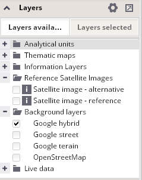

Layers available for visualization
This panel provides a list of all layers that are available for selected visualization and can be displayed in the map window.
The following types of layers are used in the webtool:
The list of available layers is sorted by these types:

Each group of layers can be expanded or collapsed.
You can switch each layer on or off and view layers' metadata in this panel.